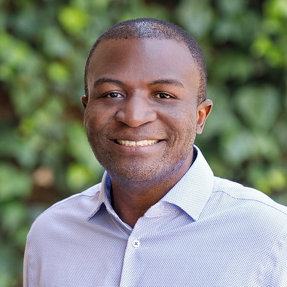

June 28th 2026, Raleigh, USA
Artificial Intelligence (AI) and Machine Learning (ML) techniques have become the de facto engines of scientific discovery,
automation, and economic growth. With rapid advances in large-scale models and accelerated computing, the global technology ecosystem
continues to shift toward AI-driven workloads. The storage, computation and communication demands for these workloads are increasing
at an unprecedented pace.
Over the past nine editions, the CogArch workshop has brought together experts exploring novel design ideas for cognitive systems.
This workshop capitalizes on the synergy between industrial and academic efforts to deepen our understanding of cognitive architectures
and the key concepts that shape them. This year’s edition emphasizes the architectural challenges that emerge as large AI models
scale from single-die systems to multi-chip, multi-node clusters, where performance is increasingly dominated by collective communication
workloads (e.g., AllReduce, AllGather, ReduceScatter). As LLMs and multimodal foundation models continue to grow in size and
complexity, the efficiency of these collective operations becomes a primary limiter of end-to-end performance across training and inference
pipelines. This shift necessitates architectural innovations at every layer—from chiplets and on-package interconnects to cluster networks,
memory systems, and software-hardware co-design strategies that accelerate synchronization-heavy computation.
The CogArch workshop solicits formative ideas and new architectural directions for AI systems, with particular focus this year on techniques,
frameworks, and hardware/software co-design approaches that optimize collective algorithms across chiplets, accelerators, and distributed clusters.
Topics of interest include (but are not limited to):
The workshop will consist of regular presentations and/or prototype demonstrations by authors of selected submissions. In addition, it will include invited keynotes by eminent researchers as well as interactive panel discussions to kindle further interest in these research topics.
Submitted manuscripts must be in English of up to 2 pages (with same
formatting guidelines as main
conference) indicating the type of submission: regular presentation or prototype
demonstration. Submissions should be submitted to the following
link.
If you have questions regarding submission, please contact us:
info@cogarch-workshop.org
Dr. Cong (Callie) Hao is an Assistant Professor in ECE at Georgia Tech with the ON Semiconductor Junior Professorship. Her research spans reconfigurable computing, hardware-aware machine learning, and electronic design automation, with a focus on software/hardware co-design and high-efficiency systems.

Thierry Tambe is an Assistant Professor of Electrical Engineering and, by courtesy, of Computer Science at Stanford University. His research centers on co-designing algorithms and hardware—from high-level models down to custom silicon—to enable efficient execution of AI and data-intensive workloads, with memory efficiency as a central theme. His work has been recognized through an NSF CAREER Award, the inaugural Google ML and Systems Junior Faculty Award, an NVIDIA Graduate PhD Fellowship, and several distinguished paper awards. Previously, Thierry was a visiting research scientist at NVIDIA and an engineer at Intel. He received a B.S. and M.Eng. from Texas A&M University, and a PhD from Harvard University, all in Electrical Engineering.
|
Sunday June 28th, 2026 (all times are local time) |
|
|---|---|
| 9:00 - 9:15 AM | Workshop Introduction CogArch'26 Organizers |
| 9:15 - 10:00 AM | Invited Talk: From Packaging to Performance: Hierarchical Interconnect Simulation for Chiplet Systems Cong (Callie) Hao (Georgia Institute of Technology) |
| 10:00 - 10:30 AM | Coffee Break |
| 10:30 - 11:00 AM |
AutoTune-TCU: Hardware-Software Co-Design of a Learning-Based Self-Optimizing TCU for HPC Nitesh Narayana Gondlyala Sathya, Sonam Sonam, Xavier Martorell (Barcelona Supercomputing Center) |
| 11:00 - 11:45 AM | Invited Talk: Co-Designing Number Format and Heterogeneous Memory Systems for Scalable AI Thierry Tambe (Stanford University) |
| 11:45 - 1:00 PM | Lunch Break |
| 1:00 - 1:30 PM |
Convergence-Based Learning Fabrics: From Elemental Devices to Communication-Minimal Distributed AI Architectures Jerry Felix (Brain-CA Technologies) |
| 1:30 - 2:15 PM | Technical Talk (Organizers): Simulating Chiplet-Based AI Architectures: Challenges and Insights Augusto Vega (IBM Research) |
| 2:15 - 2:45 PM | Coffee Break |
| 2:45 - 3:15 PM |
Towards Energy Efficient Memory Accesses via Speculative Load Fusion Deepanjali Mishra, Tanvir Ahmed Khan, Gilles Pokam, Heiner Litz, Akshitha Sriraman (Carnegie Mellon University, Columbia University, AMD, UC Santa Cruz) |
| 3:15 - 4:00 PM | Technical Talk (Organizers): Co-Designing Cache, Compute, and On-Chip AI Acceleration Alper Buyuktosunoglu (IBM Research) |
| 4:00 - 4:15 PM | Open Discussion & Wrap-up |
Pradip Bose is a Distinguished Research Staff Member and manager of Efficient and Resilient Systems at IBM T. J. Watson Research Center. He has over thirty-three years of experience at IBM, and was a member of the pioneering RISC super scalar project at IBM (a pre-cursor to the first RS/6000 system product). He holds a Ph.D. degree from University of Illinois at Urbana-Champaign.
Alper Buyuktosunoglu is a Research Staff Member at IBM T. J. Watson Research Center. He has been involved in research and development work in support of IBM Power Systems and IBM z Systems in the area of high performance, reliability and power-aware computer architectures. He holds a Ph.D. degree from University of Rochester.
Karthik Swaminathan is a Research Staff Member at IBM T. J. Watson Research Center. His research interests include power-aware architectures, domain-specific accelerators and emerging device technologies in processor design. He is also interested in architectures for approximate and cognitive computing, particularly in aspects related to their reliability and energy efficiency. He holds a Ph.D. degree from Penn State University.
Augusto Vega is a Research Staff Member at IBM T. J. Watson Research Center involved in research and development work in the areas of highly-reliable power-efficient embedded designs, cognitive systems and mobile computing. He holds a Ph.D. degree from Polytechnic University of Catalonia (UPC), Spain.
The AI and Robotics Timeline from 1939 to date
The AI portal with the latest research activities conducted by IBM on AI
The Foundation Models portal
The What are chiplets? introductory guide
CogArch will be held in conjunction with the 53rd International Symposium on Computer Architecture (ISCA 2026). Refer to the main venue to continue with the registration process.